MPS-16 ver FM1
MPS-16 ver FM1 is a chord and phrase player for the M-VAVE FM-1 by BeatSmith. Its 16 pads hold chords and phrases: the chords of any key, slices of MIDI files you copy onto it, or progressions from its library.
1Install
To try it first, open the emulator in a browser. It runs the same code, with sound.
To install it, use Chrome or Edge on a computer. Connect the FM-1 by USB, open the installer and press Install. Allow MIDI when the browser asks. Don't unplug the cable while it writes. From a terminal: python3 tools/fm1_install.py mps-16-VERSION.fwsc.
To go back to the stock firmware, use the installer's last section with M-VAVE's own firmware file. On its first start MPS-16 ver FM1 sets up its drive in the FM-1's spare flash.
A, B and C pads
The FM-1's keys have names in MPS-16: the 16 white keys are the A pads, the first 7 black keys are the B pads (bass, lead, 3rds or 5ths in the key) and the last 4 black keys are the C pads (C1 to C4: key changes and more).
ANALYZE and PROBE: what does this do?
ANALYZE: hold OCT- and OCT+ together, then touch any A, B or C pad: nothing plays, and the screen says what it is and what it does right now ("A PAD 2: A", "B PAD 1: D, plays D as bass"). Let go of the OCT buttons and you're back where you were. It works in SURFACE and CORE.
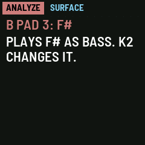
PROBE: hold ARP and every control freezes and explains itself instead: turn a knob, press a button or touch a key and the screen shows its name, what it does, and what it does with OCT- or OCT+ held, for where you are (SURFACE, or the CORE screen you came from). Nothing changes while PROBE is on. The control you touched lights up. Tap ARP or HOME to leave.
Getting started: GUIDE
The first time MPS-16 starts, it opens GUIDE: twelve short pages, from playing chords to slicing a MIDI file. Turn SELECT for the next page. The keys and buttons a page talks about blink: press a blinking button to try it (that leaves the guide), and hold SYS to come back to the guide at any time. HOME on its own leaves it.
SURFACE: play a MIDI file at once
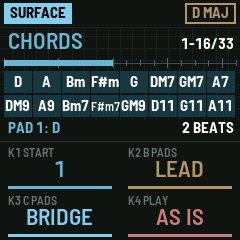
MPS-16 starts in SURFACE. Load a MIDI file and it's already on the 16 pads: no slicing to do.
| Control | Turn it to choose |
|---|---|
| PRESET | How the file is cut: EQUAL (16 equal parts), BARS, 2 BARS, HITS (each new hit), CHORDS (each chord change, its name on the pad) |
| K1 | Where in the song the 16 pads start: one slice a click |
| K2 | B PADS, the 7 B pads: ROOT (bass), LEAD, 3RD or 5TH (each note with its 3rd or 5th in the key) |
| K3 | C PADS, the 4 C pads: BRIDGE (key changes), SUGGEST (4 chords that tend to follow the pad you played), OUTSIDE (4 notes off the scale, the bluest first), BORROW (4 chords from the parallel key) |
| K4 | How the pads play: AS IS (the slice as recorded), CHORD (the slice as one held chord), STRUM, ARP, SLOPPY (as recorded, humanized), or PERFORM rhythms: STABS, OFFBT, 3-3-2, SYNC |
Hold OCT- and turn K4: more of the way they play: a wider strum, 1 to 3 arp octaves, more humanize for SLOPPY and PERFORM. Hold OCT+ and turn K4: the voicing: ROOT POS, INV 1-3, WIDE (every other note up an octave), RANDOM (new each press). Neither moves the octave.
MUTATE (SELECT): a song repeats its chords, so its 16 pads do too. MUTATE changes each repeat, one step further each time; the first time a chord comes it stays as the song has it. The pads show the new names.
| MUTATE | The 2nd, 3rd, 4th time a chord comes |
|---|---|
| OFF | As the song has it |
| EXTEND | Richer: 7, 9, 11, 13, in the key (DM7, A7, Bm7) |
| COLOR | sus4, sus2, add9, 6 (shown sus, s2, a9, 6) |
| FLIP | Major and minor swap, then dim (o), then aug (+): out of the key on purpose, scale lock or not |
| SUB | One note moves: the relative chord (D to Bm), the mediant (D to F#m), then its 7th |
| MIX | Any of them, any step; hold OCT+ and turn SELECT for a new roll |
Hold OCT- and turn SELECT: which chords mutate: EACH REPEAT, EVERY OTHER repeat, or ALL CHORDS (the first time too). It works however the file is cut and however the pads play: added notes join the chord, or hold over a slice played AS IS. Loading a file in SURFACE also sets the key from it, so the chords and their mutations fit.
ALGORITHM in SURFACE is the note length: left shorter (down to 10%, tight stabs), the middle as played, right longer (up to 450%, then LEGATO: each note on to the next). It shapes the slices and PERFORM's hits. Hold OCT- and turn ALGORITHM: the slice length, each slice from its start x1/4, x1/2, as cut, x2 or x4. Hold OCT+ and turn ALGORITHM: the velocity curve: the middle as played, left softer, right harder. The screen shows each as you turn. (In CORE, ALGORITHM is still the key's root.)
The bar under the mode shows the whole song and the stretch of it on the pads.
Hold HOME for CORE: every other screen (SLICE, TRIM, LIB, KEY, FX, kits). HOME there shows an Earth-brown CORE badge (SURFACE's is sky blue). The pads stay as SURFACE left them, to fine-tune. Tap HOME to come back to SURFACE, just as you left it: its own slices on the pads again. Pressing one of CORE's screen buttons in SURFACE takes you to CORE too.
2Playing
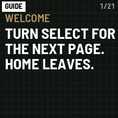
The 16 A pads (the white keys), left to right. A new kit holds the key's chords: pads 1 to 7 the seventh chords on each degree, pad 8 the first an octave up, pads 9 to 15 the ninth chords, pad 16 a sus4 on V.
The 7 B pads are the scale's degrees. K2 in SURFACE, or SEQ (MODE), switches what they do:
- ROOT: each plays a bass note an octave under the pads. When a pad plays, the B pad of its chord's root lights up, so you can add the bass under it.
- LEAD: each plays a lead note an octave over the pads. While a phrase plays, the B pads follow its top note: the key of the note sounding now is full, the key of the next one breathes. Play along on them. A chord pad held lights its top note.
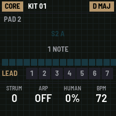
HOME shows the mode beside the degree row.
C1-C4: key changes for a bridge
With C PADS (K3) on BRIDGE, the 4 C pads change key, always from your home key:
| Key | Goes to | From D major |
|---|---|---|
| C1 | Home: your key | D major |
| C2 | Up a 4th, the usual bridge | G major |
| C3 | The parallel key: same root, major and minor swapped | D minor |
| C4 | Up a step, the last-chorus lift | E major |
Tap one to go there. The C pad in use is lit (C1 when you're home). In SURFACE the whole song moves: the pads, the bass and the lead. Each note moves degree for degree, so on C3 a D chord becomes Dm and a Bm becomes Bb, and the pads show the new names. Tap C1 to come home.
Hold one for a look first: the screen names the key and the pads whose chords fit it light up. Let go after a moment and nothing changes. Picking a key by hand (ROOT, KEY, FIND) makes it the new home.
The lights: an empty pad is dark, a loaded pad glows, a playing pad is lit. In SLICE and LIB the pads breathe to show they take a drop.
HOME shows the chord, its numeral in the key, its notes with the root marked, the 16 pads (amber chords, teal phrases) and the degree keys.
3The controls
| Control | Does |
|---|---|
| A pads (white keys) | Play a pad. In SLICE or LIB, drop the selected slice or chord on that pad |
| B pads (black keys 1-7) | Play the scale's degrees: bass notes (ROOT) or lead notes (LEAD) |
| C pads (last 4 black keys) | With BRIDGE: C2-C4 key changes, C1 home; hold to look |
| ALGORITHM (ROOT) | The key's root. With OCT- or OCT+ held, the scale |
| PRESETS (KIT) | The kit, 1 to 8 |
| SELECT | Pick a slice, a file or a library row |
| K1 to K4 | What the screen's bottom bar says |
| OCT- / OCT+ | The octave, when you let go. Held with a knob: its second job. Both held: ANALYZE, for the A, B and C pads |
| HOME | SURFACE. Leaves any screen |
| HOME (hold) | CORE's HOME |
| SYS (hold) | GUIDE: the getting-started pages |
| ARP (hold) | PROBE: every control says what it does |
| SEL (SLICE) | SLICE; again, FILES |
| ENV (TRIM) | Trim the pad played last |
| LFO (LIB) | The chord library |
| EDIT (KEY) | The key screen |
| FX | Chord FX; again, the second page |
| GLO (SYS) | The MIDI page: each pad group's channel, and the USB drive on K4 |
| SAVE | Save the settings and the kit |
| PLAY | In SLICE and LIB, hear the selection; in KEY, detect the file's key; elsewhere, all notes off |
| REC | Record MIDI coming in, again to stop and save it |
| REC + PLAY | FIND: tap a few notes, pick a key that has them |
| SEQ (MODE) | The B pads: ROOT, LEAD, 3RD, 5TH |
On CORE's HOME, K1 is the strum, K2 the arp, K3 humanize and K4 the tempo, and PRESET the kit.
4KEY
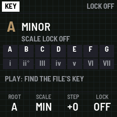
K1 the root, K2 the scale (minor, major, the modes, harmonic and melodic minor), K3 the step shift, K4 the lock.
With the scale lock on, every note that plays, from chord pads, phrases and the degree keys, snaps to the key. The step shift then moves every note by scale degrees: Am7 two steps up becomes Cmaj7, still in the key.
PLAY on this screen finds the key of the loaded file.
FIND: a key from a few notes
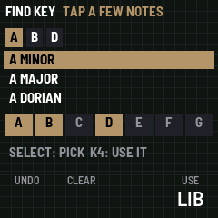
Press REC and PLAY together. Every A, B and C pad is now a note from F3 up: tap a few notes of a melody or a chord you have in your head. FIND lists every key that has all of them, best first: the first note you tapped as the tonic, then major and minor before the modes. SELECT picks one; the keyboard lights its notes, the ones you tapped full. K1 takes back the last note, K2 clears them all. K4 uses the key and opens LIB, its chords ready to drop on the pads. HOME leaves the key as it was.
5FX
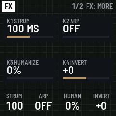
FX shapes the chord pads (phrases play as they were played).
- Strum: the notes one after another, 2 ms to 200 ms apart.
- Arp: up, down, up and down, or random, while the key is held. Its rate is on page 2: 1/4 to 1/32, triplets too.
- Humanize: each note a little late and its velocity a little off.
- Invert: the lowest note up an octave (or the highest down), up to three times.
- Bass note (page 2): the root an octave under the chord.
6LIB
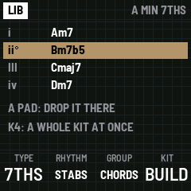
The library is built from the key. K3 picks the group: the seven chords of a type (K1: triads, 7ths, 9ths, sus2, sus4, add9), or ten four-bar progressions in a rhythm (K2: sustain, stabs, arp 8ths) with a bass line. SELECT picks a row and plays it; an A pad takes it. K4 builds a whole kit: the chords on pads 1 to 8, the progressions on 9 to 16.
7MIDI files
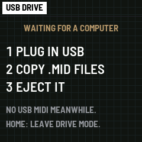
The USB drive: tap SYS for the MIDI page, then turn K4 right. The FM-1 shows the computer a drive called MPS-16 (about 270 KB). Copy .mid files onto it, then eject it. There's no USB MIDI while the drive is on; HOME leaves drive mode. Tap SYS: held, it opens the guide.
REC: press REC and play MIDI into the FM-1 (USB or the TRS jack). Press REC again: the recording is saved on the drive as RECnn.MID and opens in SLICE.
8SLICE and FILES
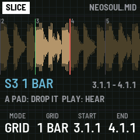
SLICE shows the file as a waveform, four bars at a time, with its cuts. K1 the mode: hits (cuts where notes land together; K2 the sensitivity) or grid (K2 the length, 1/16 to 4 bars). SELECT picks a slice and plays it, K3 and K4 move its start and end by 16ths. An A pad takes it: a chord pad when its notes land together (named, with its numeral in the key), else a phrase pad that plays at the tempo.
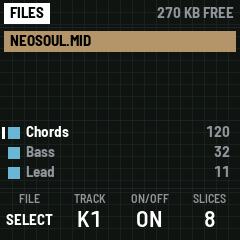
SLICE again opens FILES: SELECT picks the file, K1 a track and K2 turns it on or off. Drum tracks start off.
9TRIM
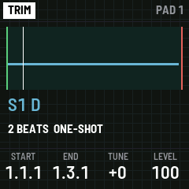
ENV (TRIM) opens the pad played last; an A pad there picks another. Nothing is cut away: TRIM only sets what plays, so you can always widen it again.
- K1 START, K2 END: the part of a phrase that plays, by 16ths. The piano roll shades it, START green, END red, the playhead white.
- K3 TUNE: up or down by semitones (12 at most), for chords and phrases.
- K4 LEVEL: how loud, 0 to 100.
- SELECT the play mode of a phrase: ONE-SHOT plays it to the end, GATE only while you hold the key, LOOP over and over until you press the key again.
SAVE keeps the trims with the kit.
10Kits and saving
A kit is the 16 pads. The KIT knob (PRESETS) switches between eight; an empty one starts with the key's chords. SAVE keeps the settings and the kit, as a file on the drive (KIT01.CSK to KIT08.CSK). Turning KIT without SAVE leaves the old kit's changes unsaved.
11MIDI and sound
Each pad group has its own MIDI channel, out over USB: the A pads on channel 1, the B pads on 2, the C pads on 3. Tap SYS for the MIDI page: K1, K2 and K3 change the A, B and C channels (1 to 16). Your gear or DAW can then give each group its own sound: the A pads your keys or sample, the B pads your bass. (The FM-1's TRS jack is MIDI in only, so MIDI goes out over USB.) MIDI in from USB or the TRS jack plays the built-in synth, a simple twelve-voice sound for now. MASTER is the volume.
12Troubleshooting
If the installer doesn't find the FM-1, use Chrome or Edge, allow MIDI, and close other programs that use its MIDI port. If the FM-1 doesn't start after an install, it starts in SAFE MODE after two failed starts; USB still works, so the installer can reach it to install again or put the stock firmware back.
If a file doesn't show in FILES, it isn't a standard MIDI file, or it's too big (96 KB at most).